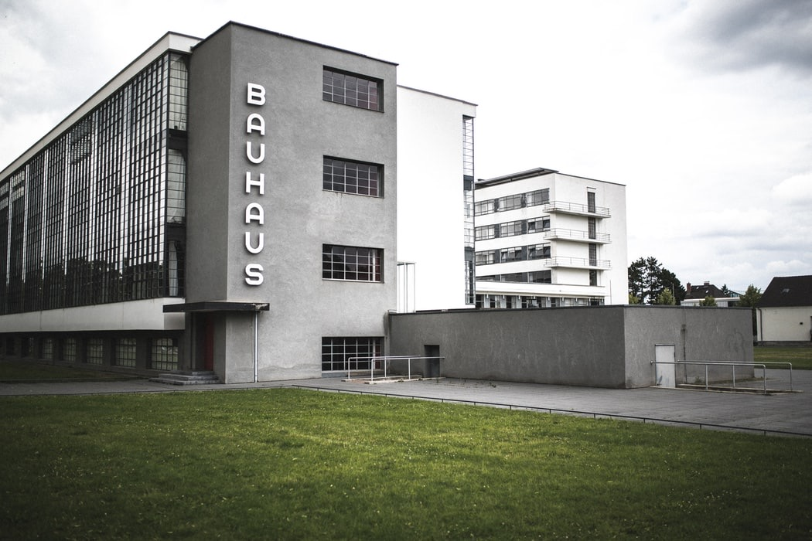
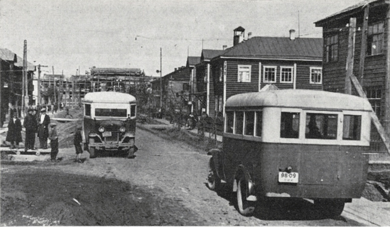

Б как Баухаус
Баухаус(также встречается Бауха́уз, нем. Bauhaus, Hochschule für Bau und Gestaltung — Высшая школа строительства и художественного конструирования, или Staatliches Bauhaus) — учебное заведение, существовавшее в Германии с 1919 по 1933 год, а также художественное объединение, возникшее в рамках этого заведения, и соответствующее направление в архитектуре.
В XX веке многие принципы, определяющие внешний облик архитектуры, повсеместное употребление классических ордеров, продолжавшееся с XV по XIX век, были поставлены под сомнение: избыточность украшений не соответствовала техническим реалиям, и, отринув орнаментику, архитекторы переломили многовековую традицию. Вначале новые здания казались невыносимыми в своей наготе, но со временем общество научилось ценить ясные очертания и компактные формы нового стиля. У его истоков стоит Баухаус, теоретические посылки которого часто сводятся к лозунгу «функционализм», то есть что утилитарно, удобно, то и красиво. Лучшие создания функционализма красивы потому, что дизайнеры обладают вкусом и художественным чутьём.
Также под влиянием Баухауса сформировалась идея Нового ви́дения в фотографии, архитектуре, изобразительном искусстве и дизайне.
История создания
25 апреля 1919 года в немецком городе Веймар была образована Высшая школа строительства и конструирования — Баухаус. Буквально это слово переводится с немецкого как «дом строительства». Первым директором и вдохновителем школы стал немецкий архитектор Вальтер Гропиус, который сформулировал ее главный принцип так:
«Мы хотим вместе придумывать и создавать новое здание будущего, где все сольется в едином образе: архитектура, скульптура, живопись, — здание, которое, подобно храмам, возносившимся в небо руками ремесленников, станет кристальным символом новой, грядущей веры».
Гропиус был убежден: именно новое конструктивное мышление, объединив зодчество, живопись, градостроительство, социальные дисциплины, даст возможность создать Gesamtkunstwerk — «великое универсальное произведение искусства» . Этот и другие принципы, сформулированные в Баухаусе, определили развитие архитектуры в XX веке. Преподаватели и студенты нашли ответ на вопрос, волновавший архитекторов с конца XIX века, — каким должен стать язык новой архитектуры в эпоху пара и электричества, стремительной индустриализации, многообещающего технологического прогресса. В Баухаусе считали, что форма здания будет выразительнее, честнее, убедительнее, соответствуя конструкции и технологии изготовления. Декоративные элементы — фриз, капитель, наличник — скрывают инженерные решения. Архитекторы Баухауса, наоборот, хотели выставить напоказ современные конструктивные приемы. Эта новая архитектура отказалась от декоративных элементов классической ордерной системы, но активно изучала потенциал психофизического воздействия различных форм, материалов и колористических решений на человека.
Художники и архитекторы Баухауса надеялись на грандиозную социальную реформу и верили, что новое искусство поможет воспитать новую личность и построить счастливое будущее для всего человечества. Отсюда интерес к строительству массового, типового жилья, в котором высокие стандарты жизни будут доступны всем слоям населения.
Учебная программа
Учебная программа состояла из трех курсов и представляла собой нечто совершенно новое. На подготовительном, или курсе основ, студентам давали базовые знания о цветах, формах, фактуре материалов, пропорциональных законах (ученики изучали функции дополнительных цветов, психофизическое воздействие различных форм и колористических решений). Затем шел практический курс — работа в мастерских, где ученики сами делали вещи. На третьем, строительном курсе работали на строительной площадке. А вот историю искусства намеренно преподавали как можно позже — чтобы предотвратить копирование и стилистические заимствования.
Мастерскую живописи и фрески возглавил Василий Кандинский, витражной живописи — Пауль Клее, обработки металла — венгерский художник и теоретик искусства Ласло Мохой-Надь. Благодаря Эль Лисицкому в Баухаусе узнали о супрематических композициях Казимира Малевича. Идеолог нидерландского авангарда Тео ван Дусбург читал лекции, в которых были изложены идеи группы «Де стиль» .
Баухаус в СССР
В СССР знали об экспериментах Баухауса благодаря Первой выставке современной архитектуры, которая прошла в Москве в 1927 году. В начале 1930-х десятки иностранных архитекторов поверили в возможность грандиозных перемен, обещанных молодым советским правительством, и начали работать над типовыми рабочими поселками на Урале и в Сибири. В условиях стремительной индустриализации строительство должно было быть быстрым и экономным. Приглашая иностранных специалистов, советские чиновники рассчитывали на помощь в разработке новых в социальном отношении типов жилья (общежития, дома культуры, многоквартирные дома с общественными хозяйственными и досуговыми зонами), на опыт стандартизированной застройки и создания инфраструктуры для поточно-конвейерного производства.
Социальный аспект архитектуры был очень важен работавшим в Баухаусе архитекторам: многие из них разделяли крайне левые политические взгляды. Поэтому революционные изменения, случившиеся в художественной и общественной жизни СССР в 1920-е и начале 1930-х годов, они приняли с большим воодушевлением. Срочное возведение целых поселков и городов было возможно только с помощью типового серийного производства, а любое массовое строительство требовало утвержденных норм и стандартов. Ярким примером служит генплан Биробиджана, над которым работал второй директор Баухауса Ханнес Мейер, возглавивший проектно-планировочное бюро № 7 института «Гипрогор», созданного специально для разработки генеральных планов застройки и развития новых городов и поселков.
